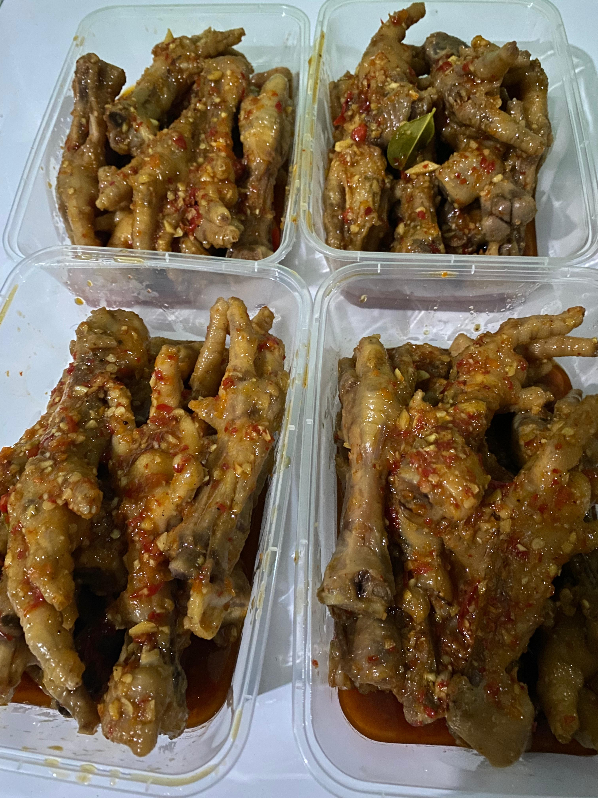
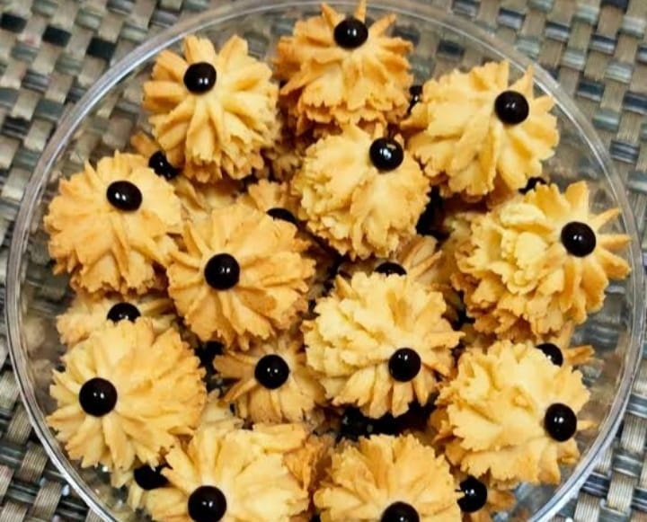
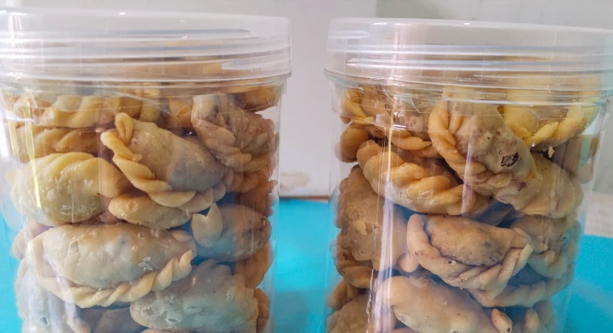
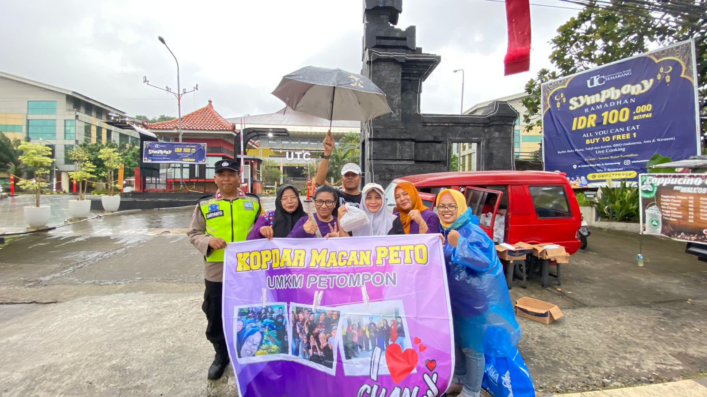

Kuliner
Menghadirkan produk kuliner lokal berkualitas dengan cita rasa yang dekat dengan masyarakat dan harga yang terjangkau.
Kenal lebih dekat dengan UMKM Macan Peto dan produk lokal yang hadir dari masyarakat Petompon.
UMKM Kelurahan Petompon Macan Peto merupakan usaha mikro, kecil, dan menengah yang berlokasi di Kelurahan Petompon, Kecamatan Gajahmungkur Kota Semarang. Usaha ini bergerak di bidang kuliner dengan menghadirkan produk berkualitas dan harga terjangkau.
Mendukung produk lokal sekaligus memperkuat potensi ekonomi masyarakat Kelurahan Petompon.
Pilihan makanan lokal yang bisa kamu lihat dan pesan melalui kontak UMKM.







Dokumentasi kegiatan dan kebersamaan UMKM Kelurahan Petompon.

Kegiatan bazar yang dilakukan warga Petompon untuk menjual produk lokal berupa makanan.

Perkumpulan UMKM Kelurahan Petompon Kota Semarang.

Pembagian takjil oleh UMKM Kelurahan Petompon dilaksanakan pada bulan Ramadhan 2026.
Berbagai macam makanan mulai dari kue kering, makanan frozen, dan makanan ringan dapat dibeli dengan menghubungi nomor WhatsApp kami.
Hubungi Bu Rahma melalui WhatsApp untuk informasi dan pemesanan produk.